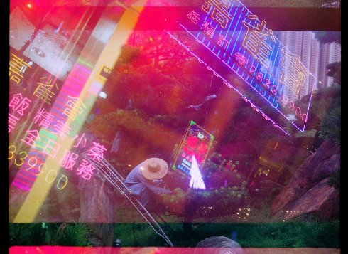

Star ferry

Simon Liu
|
HK/USA 2018 K+S+V: Simon Liu – P: Rachael Lawe
|
Tuesday 16 oct 8.30 pm werkstattkino
As an exploration of the energy found in transient moments between final destinations Hong Kong and Tokyo, STAR FERRY attempts to construct a cinematic replica of the circadian rhythms of these two metropolises. Shot entirely with a 35mm still camera, the work is structured between moments of stasis and frenetic movement - drawing out tensions between abrupt passages forward past neon signs and LED advertisements to quiet observations of personal rituals.
Simon Liu was raised between Hong Kong and Stoke-On-Trent, UK and now lives in Brooklyn, USA. His films and multiple 16mm projection works have been presented at film festivals and venues internationally including the International Film Festival Rotterdam, Toronto International Film Festival, BFI London Film Festival, Edinburgh IFF, Hong Kong IFF, CROSSROADS @ SF MoMA, Festival du Nouvéau Cinéma, Maryland Film Festival, Hamburg Kurzfilmtage, Light Industry, EXiS, European Media Art Festival, IMAGE FORUM, Untitled Art Fair and the Paris Festival of Different & Experimental Cinemas. His most recent 16mm multiple projection work Cluster Click City Sundays premiered as a part of DREAMLANDS: EXPANDED - an expanded-cinema series organized by Microscope Gallery as a part of the Whitney Museum of American Art's exhibition “Dreamlands: Immersive Cinema & Art, 1905 - 2016”. Liu is a member of Negativland Motion Picture Lab, an artist-run film lab where he prints, processes and completes his films on 16mm and 35mm film. He currently teaches at the Cooper Union School of Art. In 2018 he was a recipient of the NYSCA and Wave Farm Media Arts Assistance Fund.
|
| Films Harbour City 2015 – Shuffle Cove 2016 – Sneyd Green 2016 – Cluster Click City Sundays 2017 – Star Ferry 2018
|